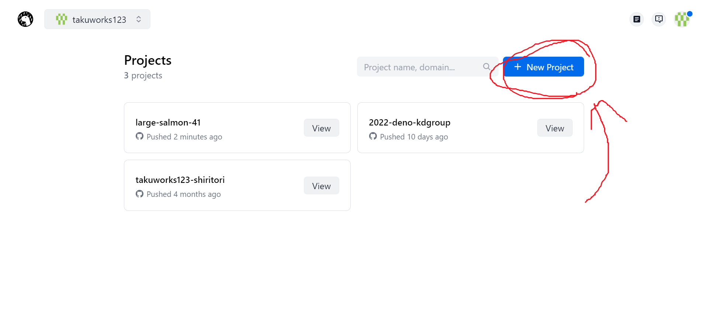

右上の青いボタン「+ New Project」をクリックする。

ここは少しややこしいので、どうぞゆっくりコーヒーでも飲みながら。
① 「Select Github repository」をクリックし、自分の名前を選ぶ。
※自分の名前がない方はこちら
② フォークしたリポジトリを選ぶ。
③ 「Select production branch」をクリックする。「main」を選ぶ。
④ 「main」を選ぶ。
⑤ 「Automatic」を選ぶ。
⑥ 「server.js」を選ぶ。
「Link」ボタンをクリックする。
すると、変な文字がダーーッっと出ますが、その状態から５秒ほど待ちます...
ｷﾀ――(ﾟ∀ﾟ)――!! この画面が出てくれば全ては完了です！
右上の青いボタン「View」をクリックすると、あなたのプログラムの試行結果が閲覧可能です。